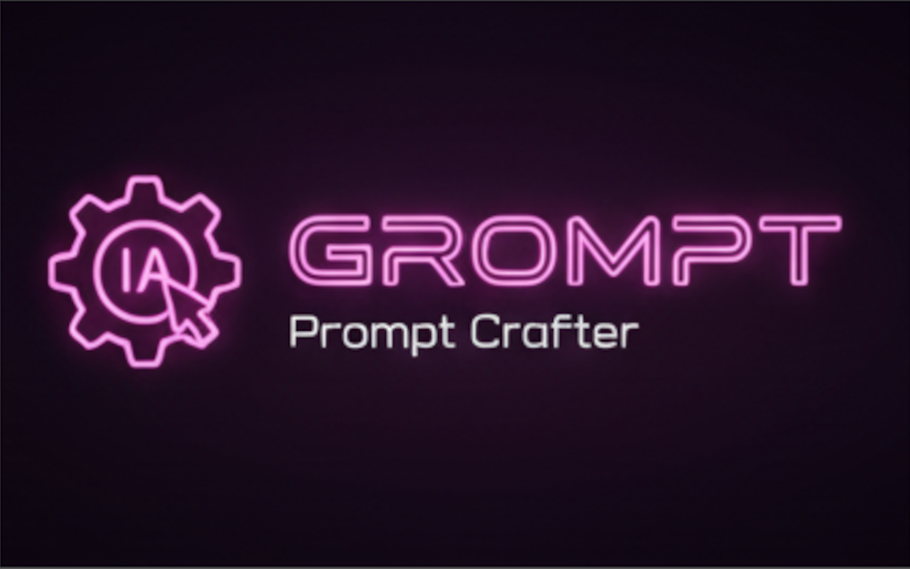

¶
Transforme suas ideias brutas em prompts estruturados e profissionais com práticas reais de engenharia


Grompt é uma ferramenta moderna de engenharia de prompts que aplica práticas reais de engenharia para transformar pensamentos bagunçados e desestruturados em prompts limpos e eficazes para modelos de IA. Construído com Go e React, roda como um binário único com zero dependências.
🎯 Por que o Grompt?¶
Antes do Grompt:
oi, pode me ajudar a fazer uma função que pega uma lista e ordena mas também
remove duplicatas e talvez retorna a contagem também? ah e deveria funcionar
com strings e números...
Depois do Grompt:
Crie uma função TypeScript genérica que:
**Objetivo Principal:** Processar arrays com funcionalidade dupla - ordenação e deduplicação
**Requisitos:**
- Aceitar arrays de tipos primitivos (strings, números)
- Remover valores duplicados preservando os tipos de dados originais
- Ordenar resultados usando lógica de comparação apropriada
- Retornar tanto o array processado quanto metadados de contagem
**Saída Esperada:**
- Assinatura da função com restrições genéricas adequadas
- Tipo de retorno: { sorted: T[], count: number }
- Tratar casos extremos (arrays vazios, elementos únicos)
- Incluir documentação JSDoc com exemplos
**Contexto:** Construindo um utilitário de processamento de dados para uma aplicação React onde manipulação consistente de arrays é necessária em múltiplos componentes.
✨ Características Principais¶
| Funcionalidade | Descrição |
|---|---|
| 🧠 Engenharia de Prompts Real | Aplica técnicas genuínas de engenharia de prompts, não apenas templates |
| ⚛️ Interface React Moderna | Interface responsiva e intuitiva com temas dark/light |
| 🐹 Backend Go Robusto | Servidor HTTP eficiente com zero dependências externas |
| 📦 Binário Único | Executável autocontido - apenas baixe e execute |
| 🌍 Multiplataforma | Suporte para Windows, Linux, macOS direto da caixa |
| 🔌 Múltiplos Provedores de IA | OpenAI, Claude, DeepSeek, Ollama, além do modo demo |
| 🚀 Configuração Instantânea | Sem instalação, configuração ou dependências de nuvem |
🚀 Início Rápido¶
Opção 1: Baixar Binário Pré-construído¶
# Baixe a versão mais recente para sua plataforma
curl -L https://github.com/rafa-mori/grompt/releases/latest/download/grompt-linux-amd64 -o grompt
chmod +x grompt
./grompt
# Abre automaticamente em http://localhost:8080
Opção 2: Construir do Código Fonte¶
É isso! Sem Docker, sem configuração complexa, sem contas de nuvem necessárias.
💡 Exemplos de Uso¶
Exemplo 1: Prompt de Geração de Código¶
Ideias de Entrada:
- “Fazer uma API REST”
- “Autenticação de usuário”
- “Banco de dados com PostgreSQL”
- “Limitação de taxa”
Prompt Gerado:
Crie um servidor de API RESTful com as seguintes especificações:
**Requisitos Principais:**
- Sistema de autenticação de usuário com tokens JWT
- Integração com banco de dados PostgreSQL com design de schema adequado
- Middleware de limitação de taxa para prevenir abuso
- Endpoints RESTful seguindo convenções padrão
**Stack Técnica:**
- Framework backend de sua escolha (Node.js/Express, Go, Python/FastAPI)
- PostgreSQL para persistência de dados
- JWT para autenticação stateless
- Redis ou limitação de taxa em memória
**Entregáveis:**
- Servidor API completo com endpoints documentados
- Scripts de migração de banco de dados
- Implementação de middleware de autenticação
- Configuração de limitação de taxa
- Documentação básica da API
**Considerações de Segurança:**
- Hash de senhas (bcrypt ou similar)
- Validação e sanitização de entrada
- Configuração CORS
- Gerenciamento de variáveis de ambiente para segredos
🎪 Casos de Uso¶
| Cenário | Como o Grompt Ajuda |
|---|---|
| Revisões de Código | Transformar feedback vago em prompts específicos e acionáveis para melhorias |
| Criação de Conteúdo | Converter briefings de conteúdo em prompts detalhados de escrita criativa ou copywriting |
| Aprendizado e Pesquisa | Transformar tópicos de estudo em prompts de aprendizado estruturados com objetivos claros |
| Documentação de API | Converter notas técnicas em solicitações de documentação abrangente |
| Sistemas de Design | Transformar ideias de design em prompts de especificação de componentes detalhados |
| Análise de Dados | Converter questões de negócio em prompts precisos de ciência de dados e análise |
⚙️ Configuração e Suporte a APIs¶
Variáveis de Ambiente¶
# Configuração do Servidor
export PORT=8080 # Porta do servidor (padrão: 8080)
export DEBUG=true # Habilitar modo debug
# APIs de Provedores de IA (todas opcionais)
export OPENAI_API_KEY=sk-... # Modelos GPT da OpenAI
export CLAUDE_API_KEY=sk-ant-... # Modelos Claude da Anthropic
export DEEPSEEK_API_KEY=... # Modelos DeepSeek
export CHATGPT_API_KEY=... # API do ChatGPT
# IA Local
export OLLAMA_ENDPOINT=http://localhost:11434 # Modelos locais Ollama
Provedores de IA Suportados¶
| Provedor | Modelos | Configuração Necessária |
|---|---|---|
| Modo Demo | Templates integrados | ✅ Nenhuma - funciona direto da caixa |
| OpenAI | GPT-4, GPT-4o, GPT-3.5-turbo | Chave da API |
| Claude | Claude 3.5 Sonnet, Claude 3 Haiku | Chave da API |
| DeepSeek | DeepSeek Chat, DeepSeek Coder | Chave da API |
| Ollama | Llama, Mistral, CodeLlama, etc. | Instalação local |
🏗️ Arquitetura e Desenvolvimento¶
Estrutura do Projeto¶
grompt/
├── 📁 frontend/ # Aplicação React
│ ├── src/
│ │ ├── App.jsx # Componente principal
│ │ └── index.js # Ponto de entrada
│ └── package.json
├── 📁 internal/
│ ├── services/server/ # Servidor HTTP e handlers
│ └── types/ # Integrações de API e tipos
├── 📁 cmd/ # Pontos de entrada CLI
├── 📄 main.go # Entrada da aplicação
├── 📄 Makefile # Automação de build
└── 📄 go.mod # Dependências Go
Configuração de Desenvolvimento¶
# Instalar dependências
make install-deps
# Modo desenvolvimento (hot reload)
make dev
# Build para produção
make build-all
# Builds multiplataforma
make build-cross
# Executar testes
make test
🛣️ Roadmap¶
🚧 Desenvolvimento Atual¶
- Biblioteca de Templates de Prompts - Templates pré-construídos para casos de uso comuns
- Histórico e Versionamento de Prompts - Salvar e rastrear iterações de prompts
- Processamento em Lote - Processar múltiplas ideias simultaneamente
🔮 Funcionalidades Futuras¶
- Analytics de Prompts - Rastrear efetividade e padrões de uso
- Colaboração em Equipe - Compartilhar prompts e colaborar na engenharia de prompts
- Sistema de Plugins - Estender funcionalidade com processadores de prompt customizados
- Limitação de Taxa da API - Limitação de taxa integrada para provedores de API
- Framework de Teste de Prompts - Testar A/B diferentes variações de prompts
- Webhooks de Integração - Conectar com ferramentas e workflows externos
🤝 Contribuindo¶
Recebemos contribuições! Veja como você pode ajudar:
🐛 Relatórios de Bug e Solicitações de Funcionalidades¶
- Abra uma issue com descrição detalhada
- Inclua passos para reproduzir para bugs
- Use templates de issue quando disponíveis
💻 Contribuições de Código¶
# 1. Fork e clone
git clone https://github.com/rafa-mori/grompt
cd grompt
# 2. Criar branch de funcionalidade
git checkout -b feature/funcionalidade-incrivel
# 3. Fazer mudanças e testar
make test
make build-all
# 4. Commit com mensagem clara
git commit -m "Adiciona funcionalidade incrível: breve descrição"
# 5. Push e criar PR
git push origin feature/funcionalidade-incrivel
🎯 Boas Primeiras Issues¶
Procure por issues marcadas com good-first-issue ou help-wanted para começar!
📊 Performance e Especificações¶
| Métrica | Valor |
|---|---|
| Tamanho do Binário | ~15MB (inclui frontend React) |
| Uso de Memória | ~20MB ocioso, ~50MB sob carga |
| Tempo de Inicialização | <1 segundo |
| Tempo de Resposta | <100ms (excluindo chamadas da API de IA) |
| Usuários Simultâneos | 1000+ (depende dos limites do provedor de IA) |
| Suporte de Plataforma | Windows, Linux, macOS (x86_64, ARM64) |
🙏 Agradecimentos¶
Agradecimentos especiais para:
- Anthropic pela API Claude e por avançar a segurança da IA
- OpenAI por pioneirar modelos de IA acessíveis
- Ollama por tornar LLMs locais acessíveis para todos
- Equipe Go por criar uma linguagem robusta e eficiente
- Equipe React pelo excelente framework de UI
- Todos os contribuidores que ajudam a melhorar este projeto
📄 Licença¶
Este projeto é licenciado sob a Licença MIT - veja o arquivo LICENSE para detalhes.
🌎 Documentação¶
- Documentação em Inglês
- Documentação em Português (este arquivo)
- Diretrizes de Contribuição
- Documentação da API
- Guia do Desenvolvedor
🚀 Sobre o Grompt¶
Grompt é uma ferramenta COMPLETA para construção de prompts com assistência de IA, utilizando práticas reais de engenharia. Com o Grompt, você pode criar prompts melhores e obter resultados incríveis. Ele é 100% gratuito e de código aberto! Totalmente autônomo, sem necessidade de instalação de dependências, funciona em linha de comando e web com uma interface amigável, intuitiva e fácil de usar para iniciantes e eintelligenceas.